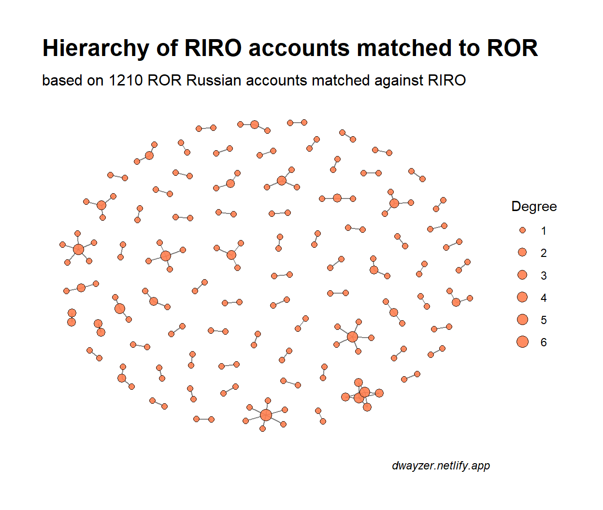

RIRO is a Russian Index of Research Organizations and here I am writing about (briefly) what this project is by its 1.1 version.
As promised, briefly, in “5 things you need to know about…” format.
With its 1.1 release RIRO project has got a web site https://openriro.github.io/.
knitr::include_graphics(paste0(img_dir, "site.png"))
This is another Distill-driven online site for RIRO official releases, use cases & code examples. The RIRO releases are both in English and in Russian.
The current version of RIRO covers 2818 parent organizations (universities, research centres, regional hospitals, etc) - together with branches and predecessors it is over 8000 entities.
knitr::include_graphics(paste0(img_dir, "chart_upset_v1.1.eng.png"))
We have a long expected newcomer - eLIBRARY organization identifier. eLIBRARY is the largest Russian aggregator of scholarly publications, so their index of organizations is almost 15000 names. We matched 1827 largest accounts and publish it in Table 12.
So far eLIBRARY offers no free/freemium API to use this ID, so if you are not a subscriber to their special services, the value of these IDs is not high.
Well, one can open organization profile on eLIRBARY.ru web site using the ID. The picture below shows the profile of Kaluga State University named after K. E. Tsiolkovski (ID = 1052).
knitr::include_graphics(paste0(img_dir, "elibrary.png"))
All versions of RIRO dataset (CSV tables) are available in Zenodo community, one can easily get it via OAI-PMH Harvesting API or by using REST API. On assumption that somebody is not willing to use Zenodo APIs we decided to publish the direct URLs to RIRO CSV files (always the latest version) here: https://openriro.github.io/latest_riro_links.csv
To cite RIRO dataset (without version):
ROR and GRID records for the Russian organizations are confusing, because they are based on outdated sources. Like this Russian Academy of Sciences account that lists both parent orgs, branchs, territorial divisions, subject departments, and many others who are no longer with RAS.
Many relations currently present in ROR are of specific, non-judicial nature. One institution can belong to the Mathematical Division of RAS, to Ural Branch of RAS, to the Federal Research Center. These relations are of different nature:
being a part of RAS Math Division is mostly about who votes for whom on RAS elections, and how the results are packed into the RAS Annual Reports. Little funding is behind these relations and no legal responsibility.
being a part of the Ural or Siberian Branch is a bit about money that RAS bracnhes are provided (tiny part of total R&D budget) and no responsibility compared to the relations between the preant organization and its subsidiary.
being part of the regional research center can be different. In some cases the institutions are the subsidiaries of the federal research center (the branches). In other cases the institutions bear the historic name referring to the regional RAS center, but are totally independent in legal way.
Is it important to keep the hierarchy of RAS subject divisions and territorial branches?
Well, only if the relations are clearly labelled and defined. Without labelling the relations are mixed with the real subsidiary-based relations and can be misleading.
RIRO data can help to this.
ROR is one of the identifiers present in RIRO. We have matched 1210 ROR IDs related to the Russian Federation (ROR Dataset v.9 https://doi.org/10.6084/m9.figshare.c.4596503.v9) to the RIRO identifiers - not all, but a majority of those that are state-owned and public.
ror <- list.dirs(paste0(dir, "/final_tables/"), recursive = FALSE) %>%
sort(., decreasing = TRUE) %>% .[grepl("1.1.1",.)] %>%
list.files(full.names = TRUE) %>%
.[grepl("table4_",.)] %>%
read_csv(col_types = cols(.default = col_character()))
ror %>% datatable(rownames = FALSE, filter = "none",
escape = FALSE, class = "row-border",
options = list(columnDefs = list(
list(width = '250px', targets = c(3:4)),
list(width = '400px', targets = c(5,8)))))
In RIRO the relations between ROR accounts are packed in compact strings. In the code below I will unpack the strings and build a network to see an hierarchy of ROR Russian accounts and to match them against the relationships present in RIRO.
ror_net <- ror %>%
select(ror_id, ror_name, ror_relationships) %>%
filter(nchar(ror_relationships)>2) %>%
separate(ror_relationships, into = c("label", "type", "id"), sep = "\\|") %>%
mutate_at(c("label", "type", "id"), ~str_replace(.x, "^[^:]+:","")) %>%
mutate_at(c("label", "type", "id"), ~gsub("^c|\\(|\\)","", .x)) %>%
mutate_at(c("label", "type", "id"), ~str_extract_all(.x, '".+?"')) %>%
unnest(c("label", "type", "id")) %>%
mutate_all(~gsub('"', '', .x)) %>%
mutate(id = str_extract(id, "(?<=/)0.+$")) %>%
select(ror_id, ror_name, type, id, label) %>%
mutate_all(~str_squish(.x))
g_ror <- ror_net %>%
select(from = ror_id, to = id) %>%
graph_from_data_frame(directed = FALSE)
summary(g_ror)
IGRAPH 6f2f8ad UN-- 135 202 --
+ attr: name (v/c)So the hierarchy of the Russian ROR IDs comprises of 135 organizations connected by 202 relations.
g_ror %>% as_tbl_graph() %>%
mutate(node_degree = degree(.)) %>%
ggraph(layout = "stress", bbox = 10) +
geom_edge_link0(alpha = 0.5) +
geom_node_point(aes(x = x, y = y, size = node_degree),
fill = "lightblue", shape = 21, alpha = 0.9)+
scale_size_continuous(range = c(2,8), name = "Degree")+
labs(title = "Hierarchy of Russian ROR accounts",
subtitle = "based on 1210 ROR Russian accounts match against RIRO",
caption = "dwayzer.netlify.app")+
theme_graph()
As stated earlier, the subject and territorial subdivisions of the Russian Academy of Sciences play central roles in this network.
In RIRO the Table 3 lists the hierarchical relations between the parent orgs and their subsidiaries, and also with the predecessors. Use of predecessors helps to deal with the accounts that ceased to exist after merger, but still present in the foreign registries of Org IDs (like ROR, Scopus, etc).
Let’s build a RIRO network where the nodes are the organizations matched to ROR. In other words we will use RIRO for linking the ROR accounts and build a network where every node corresponds to ROR account, and a proved relation (subsidiary or predecessor) is behind every edge.
riro_net <- riro %>%
left_join(ror %>% select(code, ror_id) %>% distinct()) %>%
left_join(ror %>% select(child_code = code, ror_id2 = ror_id) %>% distinct()) %>%
select(ror_id, relation, ror_id2) %>% distinct() %>% na.omit()
g_riro <- riro_net %>%
select(from = ror_id, to = ror_id2) %>%
graph_from_data_frame(directed = FALSE)
summary(g_riro)
IGRAPH 7255b2e UN-- 195 123 --
+ attr: name (v/c)Such network has 195 nodes and 123 edges. Over 15%+ of ROR accounts that we matched to RIRO has some relations (in juridicial way, like parent and subsidiary entities). Attributions to the Ministries or RAS are not included here.
g_riro %>% as_tbl_graph() %>%
mutate(node_degree = degree(.)) %>%
ggraph(layout = "nicely") +
geom_edge_link0(alpha = 0.5) +
geom_node_point(aes(x = x, y = y, size = node_degree), fill = "coral", shape = 21, alpha = 0.9)+
scale_size_continuous(range = c(2,4), name = "Degree")+
labs(title = "Hierarchy of RIRO accounts matched to ROR",
subtitle = "based on 1210 ROR Russian accounts matched against RIRO",
caption = "dwayzer.netlify.app")+
theme_graph()

The critical part here is that these 2 graphs have a tiny intersection - there are just 3 shared relations.
g1 <- g_riro %s% g_ror
print_all(g1)
IGRAPH 7454f41 UN-- 305 3 --
+ attr: name (v/c)
+ edges from 7454f41 (vertex names):
[1] 00g4bcb66--006knem90 01jkd3546--00bg9m975 01fz81h65--02sp4ja91In other words:
198 out of 202 relations (that we built based on ROR data) do not exist in RIRO (because of specific nature of those relations)
just 3 out of 123 proven relations present in RIRO are also present in ROR.
The chart below shows 2 networks joint on share plot. The shared nodes (present in both networks are shown in violet). The 3 shared edges are exactly those that connect the violet nodes (not marked with color).
graph_join(g_riro %>% as_tbl_graph(),
g_ror %>% as_tbl_graph()) %>%
mutate(color = ifelse(name %in% V(g_ror)$name, "lightblue", "coral")) %>%
mutate(color = ifelse(name %in% V(g_ror)$name & name %in% V(g_riro)$name, "violet", color)) %>%
mutate(node_degree = degree(.)) %>%
ggraph(layout = "nicely") +
geom_edge_link0(alpha = 0.5) +
geom_node_point(aes(x = x, y = y, size = node_degree, fill = color), shape = 21, alpha = 0.9)+
scale_size_continuous(range = c(2,6), name = "Degree")+
labs(title = "Hierarchy of ROR and RIRO accounts",
subtitle = "based on 1210 ROR Russian accounts matched against RIRO",
caption = "dwayzer.netlify.app")+
scale_fill_manual(labels = c("lightblue" = "in ROR only",
"coral" = "in RIRO only",
"violet" = "in both RIRO and ROR"),
values = c("lightblue" = "lightblue",
"coral" = "coral", "violet" = "violet"),
name = "Accounts with\nhierarchical relations")+
guides("fill" = guide_legend(override.aes = list(size = 3), order = 1))+
theme_graph()
The RIRO roadmap is still in the air, but we will certainly try to
cooperate with ROR
pay more attention to Wikidata
publish more use cases.
Allaire J, Xie Y, McPherson J, Luraschi J, Ushey K, Atkins A, Wickham H, Cheng J, Chang W, Iannone R (2021). rmarkdown: Dynamic Documents for R. R package version 2.7, <URL: https://github.com/rstudio/rmarkdown>.
Csardi G, Nepusz T (2006). “The igraph software package for complex network research.” InterJournal, Complex Systems, 1695. <URL: https://igraph.org>.
Gagolewski M (2020). R package stringi: Character string processing facilities. <URL: http://www.gagolewski.com/software/stringi/>.
Henry L, Wickham H (2020). purrr: Functional Programming Tools. R package version 0.3.4, <URL: https://CRAN.R-project.org/package=purrr>.
Pedersen T (2021). ggraph: An Implementation of Grammar of Graphics for Graphs and Networks. R package version 2.0.5, <URL: https://CRAN.R-project.org/package=ggraph>.
Pedersen T (2020). tidygraph: A Tidy API for Graph Manipulation. R package version 1.2.0, <URL: https://CRAN.R-project.org/package=tidygraph>.
Wickham H (2020). tidyr: Tidy Messy Data. R package version 1.1.2, <URL: https://CRAN.R-project.org/package=tidyr>.
Wickham H (2019). stringr: Simple, Consistent Wrappers for Common String Operations. R package version 1.4.0, <URL: https://CRAN.R-project.org/package=stringr>.
Wickham H, Francois R, Henry L, Muller K (2021). dplyr: A Grammar of Data Manipulation. R package version 1.0.3, <URL: https://CRAN.R-project.org/package=dplyr>.
Wickham H, Hester J (2020). readr: Read Rectangular Text Data. R package version 1.4.0, <URL: https://CRAN.R-project.org/package=readr>.
Xie Y (2020). knitr: A General-Purpose Package for Dynamic Report Generation in R. R package version 1.30, <URL: https://yihui.org/knitr/>.
Xie Y (2015). Dynamic Documents with R and knitr, 2nd edition. Chapman and Hall/CRC, Boca Raton, Florida. ISBN 978-1498716963, <URL: https://yihui.org/knitr/>.
Xie Y (2014). “knitr: A Comprehensive Tool for Reproducible Research in R.” In Stodden V, Leisch F, Peng RD (eds.), Implementing Reproducible Computational Research. Chapman and Hall/CRC. ISBN 978-1466561595, <URL: http://www.crcpress.com/product/isbn/9781466561595>.
Xie Y, Allaire J, Grolemund G (2018). R Markdown: The Definitive Guide. Chapman and Hall/CRC, Boca Raton, Florida. ISBN 9781138359338, <URL: https://bookdown.org/yihui/rmarkdown>.
Xie Y, Cheng J, Tan X (2021). DT: A Wrapper of the JavaScript Library ‘DataTables’. R package version 0.17, <URL: https://CRAN.R-project.org/package=DT>.
Xie Y, Dervieux C, Riederer E (2020). R Markdown Cookbook. Chapman and Hall/CRC, Boca Raton, Florida. ISBN 9780367563837, <URL: https://bookdown.org/yihui/rmarkdown-cookbook>.
Text and figures are licensed under Creative Commons Attribution CC BY 4.0. The figures that have been reused from other sources don't fall under this license and can be recognized by a note in their caption: "Figure from ...".